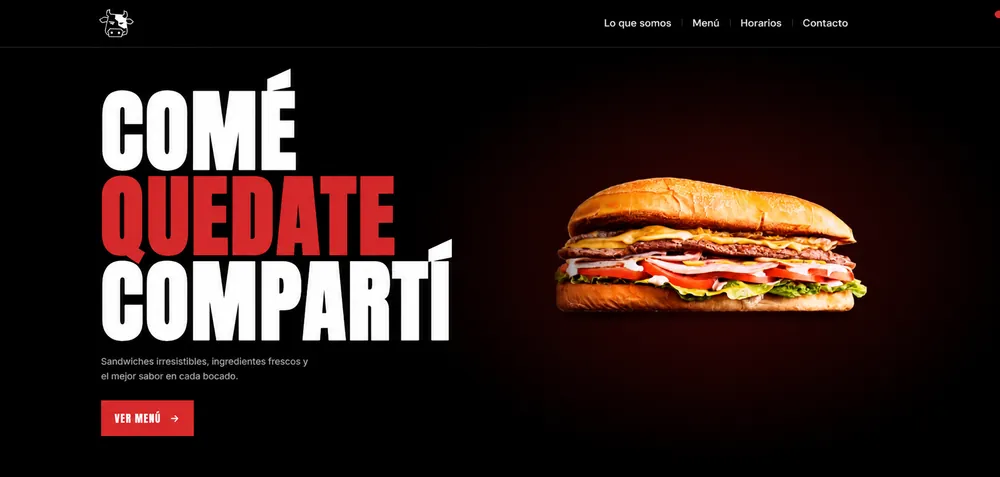
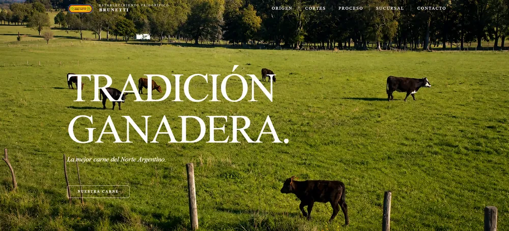
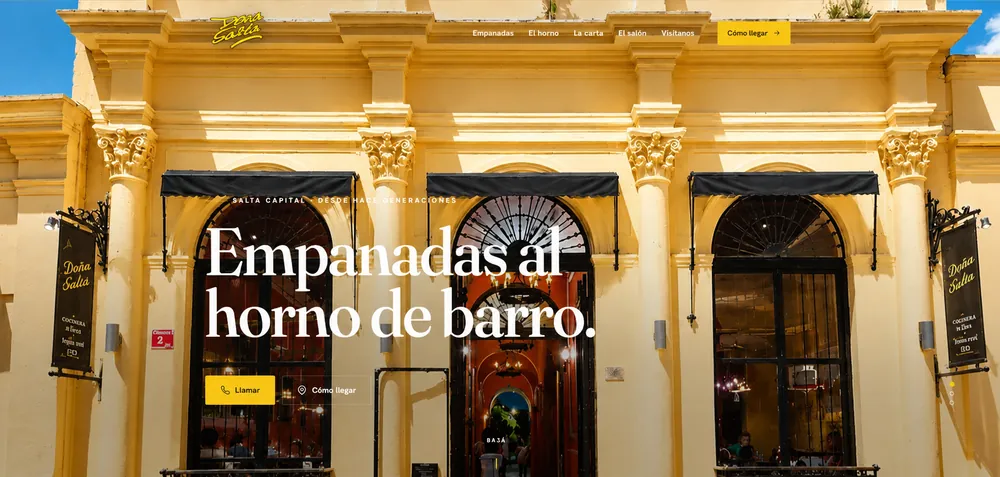
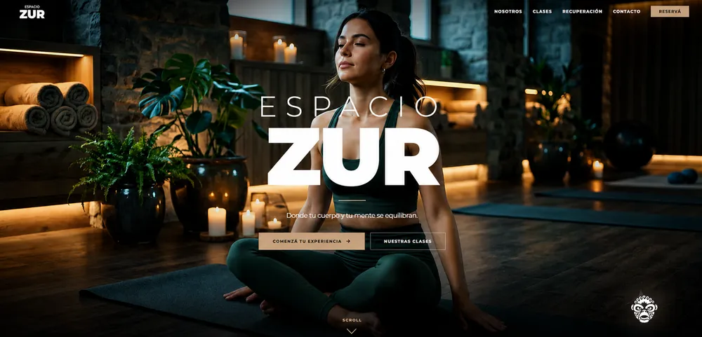
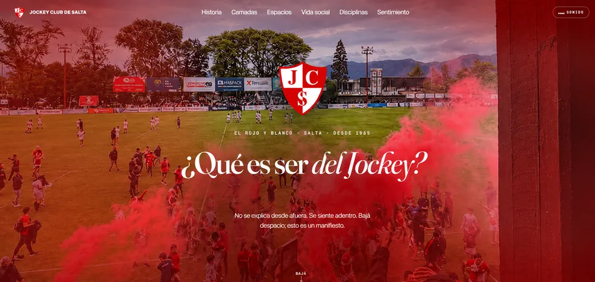
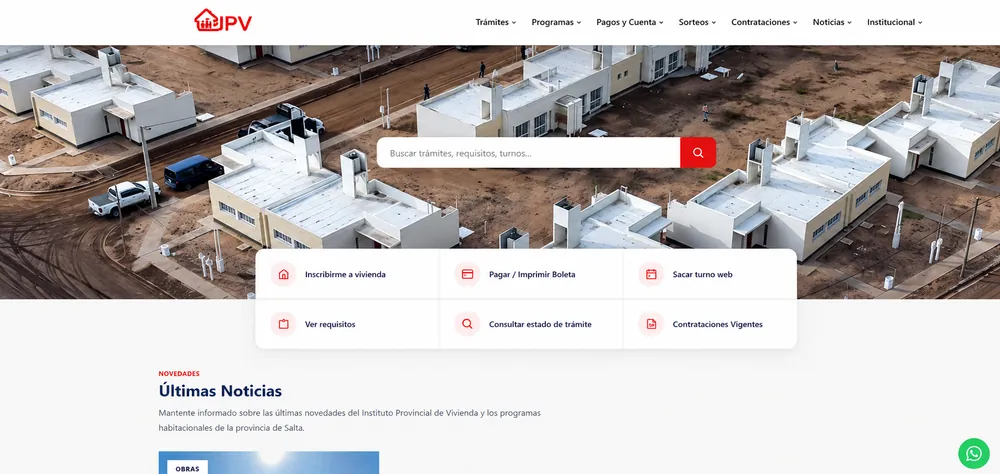

— Proyectos
Trabajo seleccionado.
Casos reales entre sitios en vivo y proyectos de UX/UI en proceso. Hacé clic en una tarjeta para abrir el case study: problema, objetivo, proceso y resultado.
— Todos los proyectos
6 casos





— Cómo leo cada caso
No muestro pantallas: muestro decisiones.
Problema
Qué estaba roto o faltaba, y por qué importaba para el negocio.
Objetivo
La meta concreta y medible que guió todo el proyecto.
Proceso
Las 4 fases aplicadas a este caso, con sus decisiones clave.
Resultado
Qué cambió al final y qué aprendí para el próximo proyecto.